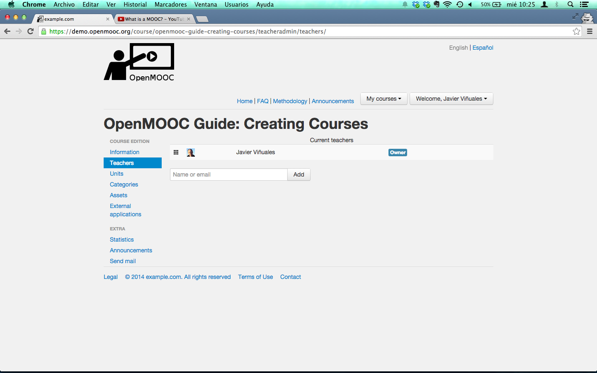

5. Course teachers¶
5.1. Overview¶
The user who creates the course is by default the owner but, he can transfer the ownership to another course teacher.
The owner user can add additional teachers to the course, forming the teaching staff of the course.
To add a teacher, can be searched by name or by email and if not yet a user of the platform, you will be sent an invitation to register. The teacher who is invited to join the team of a course always receive an email about it.
5.2. Steps to add teachers to a course¶
Select the user to add like a new teacher of the course.
The user you added is listed and you get a message from the platform like Success: The teacher has been added to the course or invited.
If you want to transfer the ownership you can do it new because there are more than one teacher in the course staff.